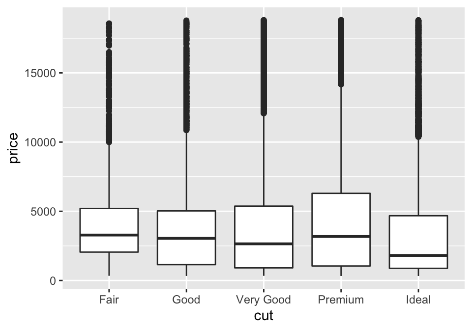

Análise de dados
Introdução à Análise Exploratória de Dados
Exploratory Data Analysis (EDA)
O que é EDA?
Sumarização e visualização de dados para analisar suas características principais
Ciclo iterativo:
- Faça perguntas sobre os dados.
- Procure respostas visualizando, transformando e modelando os dados.
- Use o que aprendeu para refinar perguntas e/ou fazer novas perguntas.
Inicialmente, investigue qualquer ideia que surgir
- Algumas darão certo, outras não.
“Far better an approximate answer to the right question, which is often vague, than an exact answer to the wrong question, which can always be made precise.” — John Tukey
Fazendo perguntas
- Seu objetivo na EDA é desenvolver um entendimento dos dados
- A forma mais fácil é fazendo perguntas para guiar sua investigação
- Foca sua atenção em partes específicas dos dados
- Ajuda a decidir que gráficos, modelos ou transformações fazer
- É um processo criativo
- Produzir grande quantidade de perguntas para obter qualidade
- Como fazer perguntas reveladoras sem conhecer os dados?
- Cada pergunta expõe um novo aspecto dos dados
- Aumenta a chance de novas descobertas
- Leva a insights interessantes deixando as perguntas levarem a outras
Tipos de perguntas
- Dois tipos muito úteis para novas descobertas:
- Que tipo de variação ocorre em cada variável?
- Que tipo de covariação ocorre entre as minhas variáveis?
- Algumas definições:
- Variável: quantidade, qualidade ou propriedade que se pode medir
- Valor: estado de uma variável quando você a mede (pode mudar)
- Observação: conjunto de medições feitas em condições similares
Variância
O que é variância e por que analisá-la?
Tendência de uma variável mudar seu valor entre uma medição e outra
Cada variável tem seu próprio padrão de variação
- Pode revelar informações interessantes
Visualizar a distribuição dos dados ajuda a entender padrões
Como visualizar distribuições?
- Depende se dados são categóricos ou contínuos
Visualizando dados categóricos
- Uma variável categórica só pode assumir um pequeno conjunto de valores
Podemos examinar a distribuição de dados categóricos:
- Usando um gráfico de barras:
- Ou computando manualmente:
# A tibble: 5 × 2
cut n
<ord> <int>
1 Fair 1610
2 Good 4906
3 Very Good 12082
4 Premium 13791
5 Ideal 21551Visualizando dados contínuos
Uma variável contínua pode assumir qualquer valor entre um conjunto infinito de valores ordenados (Exemplo: números e datas)
- Podemos visualizar com histograma:
- Ou computando manualmente:
# A tibble: 6 × 2
`cut_width(carat, 1)` n
<fct> <int>
1 [-0.5,0.5] 18932
2 (0.5,1.5] 29566
3 (1.5,2.5] 5316
4 (2.5,3.5] 117
5 (3.5,4.5] 8
6 (4.5,5.5] 1Visualizando dados contínuos - Histogramas
- O binwidth define a largura dos intervalos de um histograma
- Exemplo para diamantes com menos de 3 quilates e intervalos menores:
Visualizando dados contínuos - Histogramas
- Para vários histogramas no mesmo gráfico, recomenda-se
geom_freqpoly- Plota contagens com um linha pra cada categoria, ao invés de barras
Já visualizamos variação… e agora? Que outras perguntas faremos?
Valores típicos
Gráfico de barras e histogramas mostram valores mais e menos frequentes
Para tornar essa informação em algo útil, procure algo inesperado:
- Quais valores são mais comuns? Por que?
- Quais valores são raros? Isso corresponde às expectativas?
- Você consegue ver padrões incomuns? O que pode explicá-los?
Valores típicos - perguntas interessantes
- Por que tem mais diamantes com quilates inteiros e algumas frações comuns?
- Por que tem mais diamantes à direita de cada pico do que à esquerda?
- Por que não há diamantes com mais que 3 quilates?
Agrupamento de valores similares - Perguntas
- Quão parecidas são as observações dentro de cada grupo?
- Quão diferentes são as observações de grupos diferentes?
- Como você pode explicar ou descrever os grupos?
Exemplo: duração de erupções do Old Faithful Geyser, em minutos
Aparenta divisão em dois grupos:
- Erupções curtas (\(\approx 2\) minutos)
- Erupções longas (\(4 - 5\) minutos)
Valores incomuns - outliers
Dados que não aparentam seguir o padrão.
- Pode ser erro nos dados, mas pode ser algo importante porém inesperado
Ex: altura de diamantes. Outliers?
Investigando valores incomuns: 0, ~30 e ~60
# A tibble: 9 × 4
price x y z
<int> <dbl> <dbl> <dbl>
1 5139 0 0 0
2 6381 0 0 0
3 12800 0 0 0
4 15686 0 0 0
5 18034 0 0 0
6 2130 0 0 0
7 2130 0 0 0
8 2075 5.15 31.8 5.12
9 12210 8.09 58.9 8.06Faz sentido (?)
- Diamantes com dimensões (x, y e z) iguais a zero?
- Diamantes com dimensões muito grandes, mas que não custam tão caro?
O que fazer com valores estranhos?
- Opção 1: Eliminar as linhas (observações) que têm valores estranhos
- Mas, se 1 medição é estranha as outras na mesma linha podem não ser
- Opção 2: Substituir valores estranhos por valores inexistentes
- Representado por
NAno R (Not Available). Não afeta estatísticas.
- Representado por
Ex: antes e depois de substituir outliers por NA
Covariância
O que é covariância e por que analisá-la?
- Covariância descreve o comportamento entre variáveis.
- Tendência de 2 ou mais variáveis variarem juntas, de forma relacionada.
- É importante para encontrar padrões de relacionamento entre variáveis
- E criar modelos que estimam valores com base nessas relações
- Ex: estimar votos de candidatos com base nos gastos de campanha
- A melhor forma de identificar covariância é visualizar o relacionamento entre variáveis
- Novamente, isto depende dos tipos das variáveis
Covariância: 1 variável categórica e 1 contínua
- Problema: categorias com frequências muito diferentes
- Solução 1: plotar valor normalizado por categoria (densidade)
Alternativa para comparar variâncias: Boxplot
- Mostra visualmente algumas estatísticas populares de uma distribuição

Covariância: 1 variável categórica e 1 contínua
- Solução 2: boxplot para comparar variâncias por categoria
- Mais compacto, mais fácil de comparar várias categorias

- Diamantes de maior qualidade são mais baratos? Por que?!
Variáveis categóricas
- A qualidade dos diamantes é uma variável categórica ordinal
- Há uma ordem da menor qualidade (Fair) para a maior qualidade (Ideal)
- Variáveis categóricas podem ser não ordinais se não há ordem nos valores
- Neste caso, podemos ordená-las de acordo com outras variáveis
Covariância: duas variáveis categóricas
- Contar a quantidade de observações para cada combinação
Covariância: duas variáveis contínuas
- Já vimos uma opção: scatter plots
- Com transparência (
alpha)
Covariância: duas variáveis contínuas
- Opção 2: bin (como
geom_histogram, mas para 2 dimensões)
Covariância: duas variáveis contínuas
- Opção 3: tratar uma das variáveis como categóricas
Covariância: 2 variáveis contínuas e 1 categórica
- Para comparar relações para diferentes categorias: subplots (ou facets)
Covariância: 2 variáveis contínuas e 2 categóricas
Padrões nos dados
Se encontrar padrões, pergunte-se:
- Este padrão acontece por coincidência?
- Como você descreve o relaciomento implicado pelo padrão?
- Quão forte é o relacionado implicado pelo padrão?
- Que outras variáveis afetam este relacionamento?
- O relacionamento muda se você olhar subgrupos individuais dos dados?
Padrões nos dados
- Exemplo: tempos de espera mais longos geram erupções mais longas
- Variância: gera incerteza; Covariância: reduz incerteza.
- Valores de uma variável podem ajudar a prever valores de outra
Referências
R for Data Science. 7 - Exploratory Data Analysis
Ciência de dados com R. 9 - Visualizações de dados (ggplot2)
Prof. Marcus Carvalho @ DCX / CCAE / UFPB